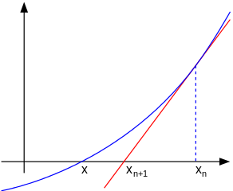
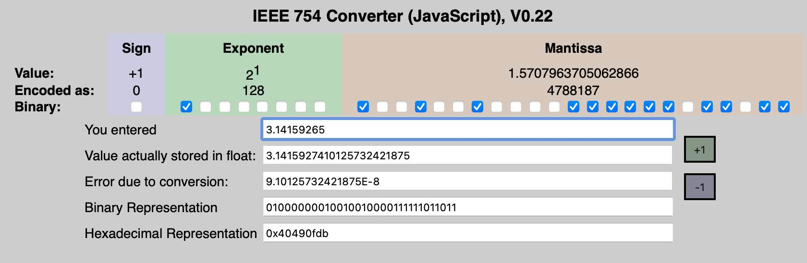
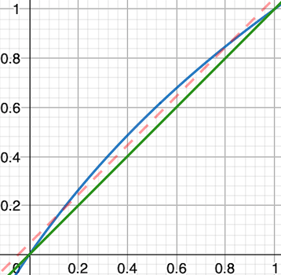

程序员面试题精解（2）— 平方根运算
遇到面试题“实现开平方根的函数”时，如果回答调用库函数sqrt()就可以了，那你就会错意了。很显然，面试官要求你实现自己的平方根运算函数。这时，如果再问为什么要自己写，那你的这次面试就危险了😌。因为你忘记了，电子计算机最初就是为了因应科学计算的需求才发明出来的。掌握基本科学计算的算法，是程序员必备的技能。
整数平方根
理解这道面试题的意义之后，我们先来看看较简单的求整数的平方根问题。数学上，“整数平方根”函数定义为\(\lfloor\sqrt{x}\rfloor\)，即对给定正整数的平方根执行向下取整操作，得出不大于该值的最大正整数。如果这样的定义读着有点拗口，那么就来看看刷题网站力扣（LeetCode）上的问题描述：
实现 int sqrt(int x) 函数。
计算并返回 x 的平方根，其中 x 是非负整数。
由于返回类型是整数，结果只保留整数的部分，小数部分将被舍去。
示例 1:
\(\quad\) 输入: x = 4
\(\quad\) 输出: 2
示例 2:
\(\quad\) 输入: x = 8
\(\quad\) 输出: 2
\(\quad\) 说明: 8 的平方根是 2.82842..., 由于返回类型是整数，小数部分将被舍去。
这道题的难度级别是“容易”，但是现实中发现不少求职者都在此栽倒。一个不需要思考的解法就是暴力搜索：从数值1开始自乘再比较，如果小于输入值就逐次加一重复此过程，直到结果相等或大于输入值。结果相等就直接输出当前值，结果大于输入值就输出当前值减一。暴力搜索解法的时间复杂度是\(\mathrm {O} (\sqrt{n})\)。对于一个32位整数，可能需要64万多次乘法，这无疑太慢了。
另一个看起来似乎很机智的方法，是利用等差数列的求和公式 \[\sum_{i=1}^n (2i-1)=1+3+5+\cdots+(2n-1)=n^2\] 这样简单地从1开始累加奇数并比较，循环往复就可以找到整数平方根。它的好处是每次都用到了上一轮的结果，而且移位加减显然比乘法快。可惜，它的时间复杂度仍然是 \(\mathrm {O} (\sqrt{n})\)，面试官还是会拒绝这样的答案，要求更有时间效率的解法。
二分查找法
整数序列本身是有序的，所以一定可以应用二分查找算法。具体应用到这个问题，我们需要首先设定上下两个边界，然后将猜测值设置为二者之间的中点。若中点的平方大于输入参数，将上界移到中点，否则将下界移到中点。循环重复直到上下边界值差1时，算法结束，下界数值就是我们要的输出。
虽然二分查找法仍然要执行乘法操作，但是其时间复杂度缩减为\(\mathrm {O}(\log n)\)。32位整数输入最多需要16次乘法，这是非常快的。要注意的是初始值的选择，必须保证每次循环时有：
- 下界 \(low\leqslant \lfloor\sqrt{x}\rfloor+1\)
- 上界 \(high\geqslant \lfloor\sqrt{x}\rfloor\)
不然算法不能收敛。一个合理且实用的选择是：\(low=1，high=x\div32+8\)。另外，上界也不能超过输入的无符号整数类型的最大值的平方根，否则会产生乘法溢出。据此，二分查找法的完整C语言代码如下（提交LeetCode后通过无误）：
1 | /* integer square root - bisection method */ |
牛顿迭代法
第二种知名的高效解法就是牛顿迭代法，是基于数值分析中在实数域上近似求解方程的牛顿-拉弗森方法（Newton-Raphson method）。这里概要介绍一下其原理：假定一个可导的实变量函数 \(f(x)\)，求满足 \(f(x)=0\) 的 \(x\) 值，即函数的零点。只要先估计一个与零点相近的值 \(x_n\)，代入下面的公式，就可以得到下一个更为接近的估算值 \(x_{n+1}\)： \[x_{n+1}=x_n-{\frac {f(x_n)}{f'(x_n)}}\tag{1}\] 这个公式是怎么得出来的呢？很简单！我们知道导数 \(f'(x_n)\) 的数值就是函数 \(f(x)\) 在 \(x=x_n\)处切线的斜率。如下图所示，将切线与 \(x\) 轴的交点记为 \(x_{n+1}\)，可以看到 \(x_{n+1}\)比 \(x=x_n\)更接近零点。

依据斜率的定义有： \[f'(x_n)=\frac {f(x_n)}{x_n-x_{n+1}}\tag{2}\]
显然公式（1）就是上式（2）的变体，证毕。
初等数学的知识告诉我们，计算实数 \(a\) 的平方根等同于求函数 \(f(x)=x^2-a\) 的零点。套用公式（1）推导出： \[x_{n+1}=x_{n}-\frac{x_n^2-a}{2x_n}=\frac{1}{2}(x_n+\frac{a}{x_n})\tag{3}\]
这就是计算 \(\sqrt a\) 的迭代公式。此牛顿迭代式呈平方收敛，每轮迭代之后，精确数位的个数翻倍。
令人惊喜的是，数学家证明了牛顿迭代法对求整数平方根一样有效。这时的迭代公式是： \[x_{n+1}=\lfloor(x_n+\lfloor a/x_n\rfloor)/2\rfloor\tag{4}\] 其中 \(x_{n+1}\)、\(x_n\) 和 \(a\) 均为正整数，而收敛的条件是：以 \(x_0\geqslant\lfloor\sqrt a\rfloor\) 开始，当 \(x_{n+1}\geqslant x_n\) 时序列收敛，\(x_n\) 就是我们要的整数平方根。实现牛顿迭代法求整数平方根时的难点，在于要确保首次估值满足以上的初始条件。一个有效的办法，是将首次估值 \(x_0\) 设成不小于 \(\sqrt a\) 且值最小的2的幂。下面给出C函数代码实现：
1 | /* integer square root - Newton iteration */ |
说明几点：
- 第9到16行实现首次估值的设置，这是一个利用比较和移位操作的精巧设计！变量
s保存不小于 \(\sqrt a\) 且值最小的2的幂指数，1 << s（\(2^s\)）就是首次估值！ - 如果存在快速的前导0计数指令或函数
nlz()，第9到14行可以用s = 16 - nlz(a - 1)/21代替。 - 如第17行所示，因为首次估值是2的幂，第一次迭代里的除法用移位代替。
- 此算法最多执行5次除法，当 \(a\leqslant(2^{24}-1)\) 时，最多4次。
移位相减法
求平方根的解法其实很多，有一种逐个数位的计算方法特别适合于手算（或心算），而且还适用于任意进位制。这种方法包括内在的搜索和测试循环，从高到低逐级判定单个数位。其基本的计算公式是二项平方展开式： \[(r+e)^2=r^2+2re+e^2\le x\] 给定当前的 \(r\)，找到下一个数位 \(e\)，使得结果最接近 \(x\)。
应用到二进制数位系统，搜索和测试的过程变得更高效，因为单个比特位都是2的幂，所有乘积都可以用快速比特移位操作实现。James Ulery写过一篇短文2，详细地推演了计算整数平方根的二进制算法。下面以整数200为例，演绎计算过程：
1 | a0=200 (0xC8), x0=0, m0=0x40 |
最后一轮 \(x\) 保存的就是整数平方根，\(a\) 为余数。如果应用64位寄存器组合变量 \(x\) 和 \(a\)，可以用硬件辅助实现快速求解。以下为对应使用C语言的软件实现，注意到整个过程需要16次迭代：
1 | /* integer square root - shift-and-substract method */ |
这种解法不太直观，迭代次数恒定，效率亦并非最高。但是了解其原理并写出正确的代码，展示了应聘者深厚的数学功底和熟练的编程技能，一定会给面试加分。
浮点数平方根
比求整数平方根更普遍的是求任意实数的平方根。这时输入值可能有小数位，输出值也会是带小数点的实数。准备这样的面试题，需要先复习浮点数的概念和应用。
IEEE 754
浮点数是计算机对实数的近似值数值表现法。IEEE 754是现今最广泛使用的二进制浮点数运算标准。它定义了表示浮点数的格式、反常值、特殊数值、以及这些数值的“浮点数运算符”。IEEE 754标准指定的浮点数格式建立于二进制科学计数法的基础之上，其数值表示式为： \[\mathrm{Value}=(-1)^s2^{e}(1+m)\] 这里 \(s\) 为符号位，\(e\) 是指数，\(m\) 被称为尾数。以IEEE 754标准规定的32位单精度浮点数为例，如下图，从右到左第31位为符号位表示正负，中间8位（第23到30位）表示指数加偏移量127后的数值，后23位储存尾数的有效数位（最高的第22位对应 \(2^{-1}\)，最低的第0位对应 \(2^{-23}\)）：
（来源：英文维基百科条目“IEEE 754”）
由此可以算出实际数值 \((-1)^02^{124-127}(1+2^{-2})=0.15625\)。从十进制实数转换为浮点数也不难，具体过程可参考此网页。还可以使用一些在线转换工具验证手算的结果。
值得注意的是，浮点数并非实数，它所表示的数会与实际的数值存在偏差。32位单精确度浮点数只可以保证7位十进制有效数字，而64位双精度浮点数可以保证15位十进制有效数字。在下面的在线工具截图中，我们输入精确到小数点后八位的 \(\pi\) 值3.14159265，转换后得到单精确度浮点数0x40490fdb，此数字实际代表的值为3.1415927410...。这证实了单精确度浮点数的精确度判断。

C语言的float类型对应IEEE 754标准规定的32位单精确度浮点数，double类型对应64位双精确度浮点数。在下面的分析中，预设的前提条件是输入的浮点数都大于零。
二分搜索法
基于实数和其浮点数表示法的特点，应用二分搜索法计算平方根的过程与整数平方根有一些不同：
- 初始值设定：这里要区分输入参数大于或小于等于1的情况
- 如果输入参数小于1，其平方根比自身要大，所以要将上界设为1，下界为其自身。
- 输入参数大于1的情况正好相反，可将上界设为自身，下界为1。
- 循环结束条件：为避免出现死循环，要注意以下两点
- 由于上下界都为浮点数，必须要定义一个误差范围，比如 \(10^{-6}\)。当上下界差值不超过此值时，立即结束循环。
- 浮点数的精度是有限的。32位浮点数
float只可以保证7位十进制有效数字。比如当下界为141.421356、上界为141.421371时，计算出来的中间值还是141.421356。所以还必须加上强制退出的判定。
考虑上述这些，我们的浮点数平方根二分搜索法实现如下：
1 |
|
巴比伦解法
面试者要掌握的第二种计算浮点数平方根的方法是巴比伦解法。这是发源于古典世界的、有悠久历史的算法。据信将近四千年前的巴比伦人就知晓了这种求平方根的方法3，但是直到公元一世纪才由古希腊数学家希罗给出明确的描述。
巴比伦解法的朴素思想是：如果估计值 \(x\) 大于非负实数 \(a\) 的平方根 \(r\)，那么 \(a/x\) 一定是小于 \(r\) 的，而二者的均值将更接近 \(r\)。因为算术平均数总是大于或等于几何平均值，所以这一算法一定收敛。巴比伦解法的实际流程可写为：
- 预测一个平方根值 \(x\)（优选接近实际平方根的数值），初始 \(y=a/x\)
- 计算 \(x=(x+y)/2\)（使用算术平均值近似几何平均值）
- 比较 \(x\) 和 \(y\)，如果差值达不到精度，重复以上步骤
仔细观察上面第2步，这不就是前面讲到的牛顿迭代法公式（3）么！所以巴比伦解法与牛顿迭代法本质上是等同的。想想在牛顿发明微积分之前还早两千多年时，古巴比伦人已经会熟练地应用此方法计算出平方根了，这样的智慧实在是让人佩服。
明白了巴比伦解法的原理和流程，我们就能写出简洁的代码实现：
1 | /* real number square root - Newton/Babylonian */ |
平方根倒数
在3D游戏程序开发中，依据计算机图形学的原理，需要使用规一化向量来实现光照和投影效果。由此可能每秒要做上百万次平方根倒数运算，所以找到一种快速平方根倒数的计算方法至关重要。此外，平方根倒数也广泛应用在量化神经网络、深度学习、气象数据处理及基准测试（benchmarking）软件中。
速算法实现
很明显，直接使用1去除以浮点数平方根函数的输出是低效的。幸运的是，早在上个世纪80年代后期，工作于一些3D图形显示软硬件公司的程序员（们）就发明了“平方根倒数速算法”（Fast Inverse Square Root，简称“Fast InvSqrt()”）。对于同一精度的近似值，此算法比直接使用浮点数除法要快四倍！
下面就是对应于32位单精度浮点数的“平方根倒数速算法”C语言实现：
1 | /* fast inverse square root function for 32-bit IEEE 754 |
虽然平方根倒数速算法不太可能在面试中被问到，但是理解这个精巧的算法会极大地巩固和加深程序员的知识面。如果你有机会能准确而清晰地讲述其机理，一定会给面试官留下深刻印象。
速算法解析
那么该如何理解这段简短的程序呢？它又是如何以令人意想不到的速度完成平方根倒数运算的呢？让我们来条分缕析。
牛顿迭代
先从最后两行看起。第9行和第10行完全一样，注释标明是牛顿（迭代）步骤。我们来验证一下它是否符合迭代公式。计算实数 \(a\) 的平方根倒数等同于求函数 \(f(x)=x^{-2}-a\) 的零点。套用公式（1）推导出： \[\begin{align}
x_{n+1}&=x_{n}-\frac{x_n^2-a}{-2x_n^{-3}}\\
&=x_n+\frac{1}{2}x_n-\frac 1 2ax_n^3\\
&=x_n(1.5-\frac a 2 x_n^2)\tag{5}
\end{align}\] 公式（5）和代码正好对上！所以程序在此执行了两步牛顿迭代。由此也可推断出第8行的变量x储存着平方根倒数的初始估计值。进一步，我们可以判定程序的第6、7、8三行应该就是用来生成这个预估值的。问题是整数i是做什么用的？那个0x5f375a86被称为魔术数字，它又是从哪里冒出来的呢？
类型转化
要弄懂这三行代码，就需要了解将IEEE 754格式的浮点数转化为整数时发生了什么。如第6行的代码所示，转化通过取别名存储的方式实现。原浮点数的所有比特都保留不动，只是被重新解析为整数4。回顾前述“IEEE 754”一节讲到的浮点数数值表示法，不考虑符号位，如果标记原浮点数为\(x=2^{e_x}(1+m_x)\)，则转化后的整数可表示为\(I_x=E_xL+M_x\)。这些参数之间的关系为（括弧内为单精度时的取值）： \[\begin{align} E_x&=e_x+B &(B=127)\\ M_x&=m_xL &(L=2^{23}) \end{align} \] 还是以0.15625为例，从其浮点数表达式 \(2^{-3}(1+0.25)\) 得出 \({e_x}=-3\)、\(m_x=0.25\)。由此导出 \({E_x}=-3+127\)、\(M_x=0.25\cdot2^{23}\) 及 \(I_x=124\cdot2^{23}+2^{21}=1042284544\)，这正好对应浮点数0.15625存储数据的十六进制数值0x3e200000。
线性近似
另一个要用到的知识点，是特定对数函数的线性近似。如下图所示，在\([0,1]\)区间内，\(\log _{2}{(1+x)}\) 与 \({x}\) 很接近。事实上，越接近端点相差越小。为了使平均误差最小，可以考虑将 \({x}\) 加上一个矫正值 \(\sigma\)。从图形上看，这等同于将直线上移，平均误差确实变小了。 由此得到关系式 \(\log_{2}{(1+x)}\cong x+\sigma\)。记住这一式子，因为我们马上就要用到。
蓝线为 \(\log_2(1+x)\)，绿线为 \(x\)，红线为 \(x+\sigma\)
魔术数字
有了以上这些预备知识，魔术数字就可以推到出来了。首先，如果将浮点数 \(x\) 的平方根倒数的结果记为 \(y\)，则有 \[y=\frac{1}{\sqrt{x}}\] 对等式的两边取以2为底的对数，得到 \[\log_2{(y)}=-\frac{1}{2}\log_2{(x)}\] 因为 \(x\) 和 \(y\) 都是浮点数，下一步用它们各自的浮点数标记 \(2^{e}(1+m)\) 代入 \[\log_2(1+m_y)+e_y=-\frac{1}{2}\log_2{(1+m_x)}-\frac{1}{2}e_x\] 注意，这里应用对数的运算性质，乘方运算已化为加法运算。接下来将上一节的线性近似关系式代入，得出 \[m_y+\sigma+e_y=-\frac{1}{2}m_x-\frac{1}{2}\sigma-\frac{1}{2}e_x\] 下面一步非常关键，参考“类型转化”一节提到的关系式，用 \(E\) 及 \(M\) 替换 \(e\) 及 \(m\) \[M_y+(E_y-B)L=-\frac{3}{2}\sigma{L}-\frac{1}{2}M_x-\frac{1}{2}(E_x-B)L\] 移项整理后变成 \[E_yL+M_y=\frac{3}{2}(B-\sigma)L-\frac{1}{2}(E_xL+M_x)\] 仔细观察上式，左边不就是浮点数 \(y\) 转化为整数 \(I_y\) 的表达式 吗？而右边也包含 \(I_x\)。标记 \(R=\frac{3}{2}(B-\sigma)L\)，得到整数 \(I_y\) 与 \(I_x\) 的关系式： \[I_y=R-\frac{1}{2}I_x\tag{6}\] 再看看函数代码的第7行i = 0x5f375a86 - (i >> 1);，BINGO！给定线性近似的矫正值 \(\sigma\)，就可以从公式（6）确定整数 \(R\)，即魔术数字。而第8行x = *(float *)&i;所做的只是将预估值转化回浮点数，即从 \(I_y\) 到 \(y\)， 以便下面的牛顿迭代。
平方根倒数速算法，本质上是对输入浮点数做整数转化再进行一次移位操作，然后从一个精心挑选的整数常数中减去，结果转化回浮点数后就是其平方根倒数的近似值，最后根据精度需要进行一次或两次牛顿迭代。
余下的问题是，怎么找到一个合适的 \(\sigma\) 以计算出 \(R\)，从而提供有足够精度初始估计值？
早在2003年，当平方根倒数速算法的源码开始在某些网络论坛上出现时，普渡大学的数学博士Chris Lomont就对此做过专门研究5。那时流传的经典代码用到的 \(R\) 值是0x5f3759df（对应 \(\sigma=0.045046568\)），这个数值已经提供了相当好的精确度。Chris最初理论推导出一个的\(R\) 值，但是实测结果竟然比经典 \(R\) 值要差！Chris无奈在暴力搜索后终于得出最优值为0x5f375a86（对应 \(\sigma=0.045033296\)），在牛顿迭代后所得的结果比经典值更精确。2018年，乌克兰、波兰和印度的几位科学家联名发表了期刊文章6，全面分析了单精度浮点数平方根倒数速算法中魔术数字的搜寻过程。他们通过缜密的计算证明0x5f375a86确实是最优值，并推导出了一次牛顿迭代后相对误差不超过 \(1.75\cdot 10^{-3}\)、二次迭代后上界为 \(4.60\cdot 10^{-6}\)。
但是，迄今为止谁也不知道最初是由谁找到0x5f3759df的。想象在1980年代末，一个或几个程序员在嘈杂、幽闷的机房里，面对现在看来奇慢无比的计算机和分辨率极低的显示器，一遍又一遍孜孜不倦地推演和编程计算、实验平方根倒数速算法并寻找一个最优减法常数，最后终于找到这个魔术数字，之后二、三十年计算机图形和图像技术的发展都受益于此。这注定成为一段程序员的传奇故事！
单元测试
单元测试是是保障软件开发质量的重要环节，是程序员的职责。面试者应该知道如何测试所写的代码。
对于整数平方根，参考前述函数实现，我们要专门测试二分法的上界条件，确保其收敛性。此外，测试必须涵盖完全平方数（perfect square）和非完全平方数。因为没有标准的整数平方根库函数，我们可以先随机产生一个16位无符号整数，再自乘生成完全平方数保存。然后随机产生第二个16位无符号整数并对第一个整数取余，余数与完全平方数相加另存。这样保存的两个数的整数平方根都是第一个整数，可以用来测试。基于此的整数平方根测试代码如下：
1 | /* test integer square root */ |
测试浮点数平方根函数则方便得多，可以调用平方根库函数sqrt()，然后比较结果是否在给定的精度之内。下面的程序使用熟知的2的平方根及其标准倍数实现测试：
1 | /* test real number square root */ |
快速平方根倒数的测试代码也不复杂。值得一提的是如何生成指定范围内的随机浮点数（可能成为单独的面试问题），这由下面程序段的第11行完成。测试也调用了sqrt()，以计算相对误差，如第15行所示：
1 |
|
单元测试的运行结果记录如下：
1 | $ ./sqrts |
可以看到，计算浮点数平方根时，与库函数sqrt()的输出相比，巴比伦解法（牛顿迭代法）的结果精度比二分搜索法更高一些，但二者都在程序设定的绝对误差范围（\(10^{-6}\)）之内。对于快速平方根倒数算法，其结果精度真的很高，计算出来的相对误差确实在理论的上界 （\(4.60\cdot10^{-6}\)） 之内。这就是算法的力量！
完整程序（包含以上所有函数及测试代码）的压缩包在此下载：sqrts.c.gz
这是因为“nlz”本质上就是以2为底的整数对数函数。对于大于0的整数 \(a\)，有 \(\lceil\log_2(x)\rceil=32-\mathrm{nlz}(x-1)\)，由此导出 \(\lceil\log_2(\sqrt x)\rceil=16-\mathrm{nlz}(x-1)/2\)。↩︎
James Ulery, Computing Integer Square Roots, University of Toronto, 2006↩︎
耶鲁大学收藏的一块古巴比伦黏土板（编号YBC 7289），上面以六十进制记载了单位正方形对角线长的准确估计值\({\textstyle 1;24,51,10}\)。这个数的估算误差小于两百万分之一。↩︎
注意这种类型转化与C语言的强制类型转换不同，后者会直接舍弃小数位。↩︎
Chris Lomont. Fast inverse square root. Technical report, Indiana: Purdue University, 2003.↩︎
Moroz, Leonid V., et al. "Fast calculation of inverse square root with the use of magic constant–analytical approach." Applied Mathematics and Computation 316 (2018): 245-255.↩︎